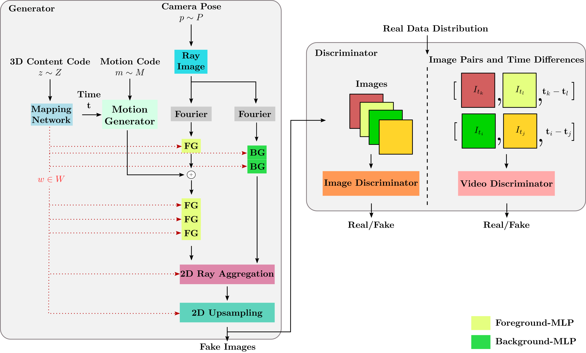

Generative models have emerged as an essential building block for many image synthesis and editing tasks. Recent advances in this field have also enabled high-quality 3D or video content to be generated that exhibits either multi-view or temporal consistency. With our work, we explore 4D generative adversarial networks (GANs) that learn unconditional generation of 3D-aware videos. By combining neural implicit representations with time-aware discriminator, we develop a GAN framework that synthesizes 3D video supervised only with monocular videos. We show that our method learns a rich embedding of decomposable 3D structures and motions that enables new visual effects of spatio-temporal renderings while producing imagery with quality comparable to that of existing 3D or video GANs.
Method

The two main components of our 4D GAN framework are a time-conditioned neural scene generator and a time-aware discriminator. Our generator networks take as input two independent noise vectors, \(\bf{m}\) and \(\bf{z}\), that respectively modulate the motion and the content of the 4D fields. To render an image at a specific time step \({t}\), we sample the camera extrinsics according to dataset-dependent distribution and conduct volume rendering through the time-conditioned radiance and density fields. Our time-aware discriminator measures the realism of a pair of frames, given their time difference, to promote plausible 3D video generation.
Results on FaceForensics Dataset
Ours with Forward-Facing Camera
Ours with Forward-Facing Camera and Zoom Effect
Ours with Rotating Camera
Ours with Motion and Content Decomposition
(random motions applied to each identity)
Ours pre-trained on FFHQ with Forward-Facing Camera
Ours pre-trained on FFHQ with Rotating Camera along Two Axes
Ours pre-trained on FFHQ with Motion and Content Decomposition
(two same motions applied to 4 identities)
Samples Generated with MoCoGAN-HD
Samples Generated with DIGAN
Samples Generated with StyleGAN-V
Results on MEAD Dataset
Ours with Forward-Facing Camera
Ours with Forward-Facing Camera and Zoom Effect
Ours with Different Camera Positions
Samples Generated with StyleGAN-V
Results on TaiChi Dataset
Ours with Rotating Camera and Static Motion
Ours with Rotating Camera and Dynamic Motion
Ours with Forward-Facing Camera
Ours with Forward-Facing Camera and Zoom Effect
Samples Generated with DIGAN
Results on SkyTimelapse Dataset
Ours with Forward-Facing Camera
Ours with Rotating Camera along First Axis and Static Motion
Ours with Rotating Camera along First Axis and Dynamic Motion
Ours with Rotating Camera along Second Axis and Static Motion
Ours with Rotating Camera along Second Axis and Dynamic Motion
Samples Generated with DIGAN
Samples Generated with StyleGAN-V
Notes
For FaceForensics and SkyTimelapse comparisons to MoCoGAN-HD, DIGAN, and StyleGAN-V we use generated results provided on the StyleGAN-V website.